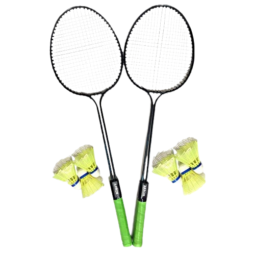
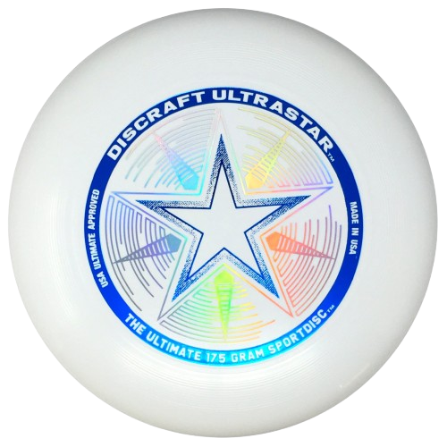
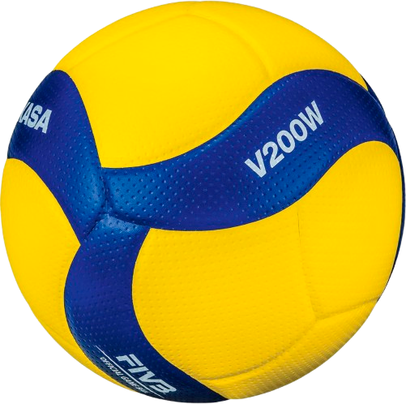
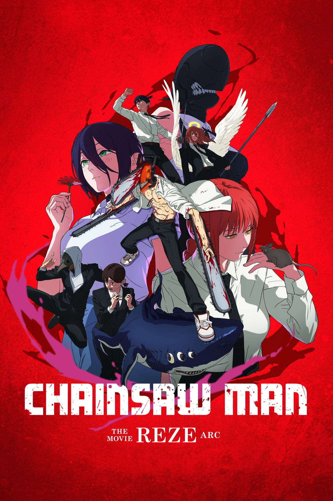

About Me
I'm a creative individual passionate about business, finance, art and computer science. With experience in computer science and finance, I enjoy building things and learning more! I'm also quite athletic and enjoy racquet sports like tennis and badminton!
My Educational Journey
Scroll sideways to explore →
Moved to Canada 🇨🇦
Davisville Junior Public School
Started my Canadian education journey! Placed in Grade 3 for two weeks (I should have been in Grade 2), putting me a grade ahead. Completed Grade 4 before the pandemic changed everything.
Elementary SchoolThe COVID Era
Davisville JPS & Hodgson MS
Completed Grade 5 online at Davisville, then started Grade 6 at Hodgson Middle School online.
Online LearningMiddle School
Hodgson Middle School
Grades 7 and 8. Started volleyball, joined clubs, and found my footing in what I actually enjoy — coding, sports, art, and learning how things work.
Middle SchoolVictoria Park CI
Pre-IB Program · Grade 19
Attended Pre-IB Grade 9 at VPCI. Earned a Pascal Math Competition Distinction. Made many wonderful friends and challenged myself academically.
Middle SchoolNorth Toronto CI
Investment Club, Aerospace Club Executive, real projects, math contest distinctions, UTHSDC placement. A lot happens in a year.
High SchoolUniversity of Toronto
Finance · Business · Computer Science
Finance major, Business and CS minors. Rotman School of Management.
The Plan ✦Favorite Sports

Badminton
I've been playing badminton since I was a kid, and I love the sport!
Racquet Sport

Tennis
I've been playing tennis since I was a kid, even attending an academy. Though I don't enjoy it as much anymore due to other sports I've picked up, I'm still quite fond of it!
Racquet Sport
Ultimate Frisbee
I started playing ultimate frisbee in middle school, and from the first time I played it, I loved the game!
Team Sport
Volleyball
I started playing volleyball in grade 7 a few months before I joined the school team, and I love the sport so far!
Team SportExperience & Skills
Coding
Swift
I started self-learning Swift in 2022 and stopped soon after; I only know the basics.
BeginnerPython
I started learning Python from a course on Udemy, after that I had fun creating many projects in the language!
Intermediate View Projects →Full Stack Web Development
I started self-learning Full Stack Web Development in 2021 and have now created a few cool projects with it!
IntermediateVolunteering
Peer Tutoring
I started peer-tutoring in the first semester of grade 10. Peer tutoring has helped me increase my confidence and better my time management. I was able to complete my work while teaching my peer. At first, I struggled with teaching but over time I started to learn and became effective at it.
OngoingClubs & Activities
Investment Club
I joined the Investment club to learn financial literacy and investing.
FinanceNTCI Web Club
I joined the NTCI Web club to improve my web development skills. The goal of the club is to maintain the school website.
TechnologyAerospace Club
I joined the Aerospace Club due to my interest in engineering and curiosity and was soon appointed as an Executive member. I have since led many lessons, worked on a model rocket and RC plane.
Executive MemberDebate Club
I joined the Debate club to improve my communication skills and build confidence.
CommunicationLeadership Club
I joined the Leadership club to improve my communication skills and build confidence.
LeadershipBadminton Club
I joined the Badminton club to have fun and improve at badminton.
Sports🎨 Hobbies & Interests
Sketching
I started sketching in grade 8, starting with videos and then moving to photo references. I'm now learning to draw on my own!
Creative View Art →Favorite Media

Attack On Titan
The second anime I ever watched and frankly, what really got me interested in the genre. To this day I believe it's one of the best pieces of TV/media on the planet.

I Survived Book Series
I have read 3 books out of this series, and they are all wonderful so far!

Chainsaw Man: Reze Arc
The best movie I have ever watched, period. A beautiful tale of teenage love, with a bunch of action and magnificent animation, almost brought me to tears.